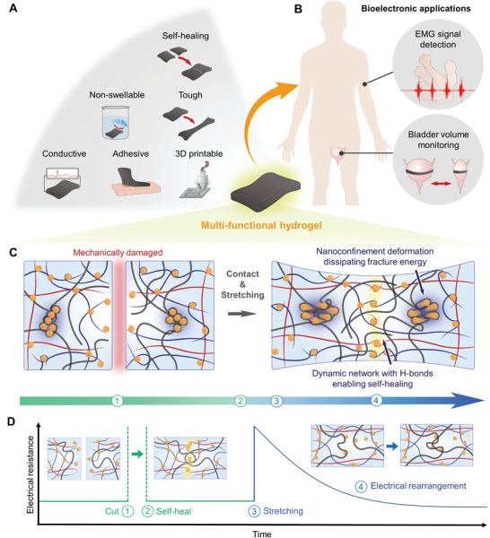

Overview
This study, developed by the BLISS Lab (Jungmok Seo) at Yonsei University with collaborators, reported an intrinsically nonswellable hydrogel in which tannic acid (TA) and functionalized carbon nanotubes (fCNTs) form dynamic nanoconfinement structures within a poly(vinyl alcohol) (PVA) and poly(acrylic acid) (PAA) network. The hydrogel had tissue-like moduli of 10 to 100 kPa, stretched to ≈1000% strain, self-healed within 5 min and showed a conductivity of ≈40 S m−1.
Background
Bioelectronics intended for daily healthcare must remain functional at soft, curved and wet tissue surfaces, yet even soft electronic materials have Young's moduli of approximately 1 MPa to 1 GPa, compared with about 100 kPa for biological tissues. Hydrogels match tissue softness but are usually brittle, lack reliable electrical conductivity, swell in wet tissue and are incompatible with established electronic fabrication. Tough hydrogels, self-healing hydrogels and nanomaterial-filled conductive hydrogels each address one problem, but toughening networks restrict the chain motion needed for self-healing, conductive fillers restrict the dynamic network and reduce the softness and stretchability of the gel, and swelling can erode these properties in vivo.
Design and approach
The hydrogel combines PVA, TA, fCNTs oxidized with KMnO4 to carry abundant carboxyl and hydroxyl groups, and an interpenetrating PAA network. TA, which has 25 hydroxyl groups per molecule, acts as a dense reversible hydrogen-bond crosslinker, and the fCNTs disperse in water at up to 50 mg mL−1. After PAA interpenetration, π-stacking and hydrophobic interactions aggregate TA and fCNT into nanoconfinement domains that dissipate fracture energy, while the surrounding nonconfined region keeps reversible hydrogen bonds for softness and self-healing; the hydrophobic moieties of TA and fCNT suppress swelling. Varying TA between 20% and 40% w/v tunes the modulus. Treating the carboxyl groups of PAA with N-hydroxysuccinimide (NHS) ester allows covalent bonding to amine-bearing surfaces and tissue, and cleavage of hydrogen bonds above 50 °C gives shear thinning for printing.

Concept of a dynamic nanoconfinement network supporting mechanical recovery and electrical continuity in a hydrogel.
Jae Park, Ju Yeon Kim, Jeong Hyun Heo et al. “Intrinsically Nonswellable Multifunctional Hydrogel with Dynamic Nanoconfinement Networks for Robust Tissue‐Adaptable Bioelectronics”. Figure 1. DOI: 10.1002/advs.202207237. CC BY 4.0. Figure content is unchanged.
Source figure and caption ↗ · DOI: 10.1002/advs.202207237 ↗ · CC BY 4.0 ↗
How it was evaluated
Nanostructure and chemistry were examined by atomic force microscopy phase imaging, transmission electron microscopy, infrared and X-ray photoelectron spectroscopy. Mechanical tests covered tensile and cyclic tensile–compressive loading, rheology, notch tests, self-healing in air and under water and swelling of each intermediate composition. Electrical tests included conductivity versus fCNT concentration, conductivity in phosphate-buffered saline (PBS), impedance between platinum electrodes, resistance during cutting and stretching and strain sensing. Adhesion was measured by lap shear and tensile tests on amine-functionalized device materials and porcine skin. Biocompatibility was tested with NIH 3T3 fibroblasts and by subcutaneous implantation in 6-week-old male CD-1 (ICR) mice. Applications were volume sensing on an ex vivo porcine bladder and electromyography (EMG) from a human forearm in air and under water, compared with a commercial 3M Red Dot electrode.
Key results
AFM phase images showed a uniform network for fCNT/TA/PVA and distinct nanophase separation after PAA interpenetration, which lowered the modulus into the 10 to 100 kPa range of soft tissue. The hydrogel reached a tensile strength of approximately 95 to 121 kPa at ≈1000% elongation and a toughness of 400 to 873 J m−3, showed a hysteresis of ≈2.5% in cyclic loading at 10%, 50% and 100% strain, and kept its strain at break with notches of 20% and 40% of its width. A cut hydrogel recovered 30% of its initial state within 10 s and almost fully after 5 min, with its Young's modulus maintained over repeated healing cycles. The authors note that the density and size of the nanoconfinement domains could not be controlled precisely from sample to sample.
The swelling ratio was 100% for PVA and 60% for fCNT/PVA, whereas TA/PVA showed almost no weight increase, and the full hydrogel kept its volume over 12 h of immersion and its tensile strength and Young's modulus under water for 13 days. It healed completely under water within 5 min, compared with up to 48 h reported for a hydrophobic self-healing PDMS elastomer.
Conductivity showed a percolation threshold at 0.25% fCNT and reached ≈40 S m−1, above the 0.3 to 0.7 S m−1 of tissues, and was maintained in PBS for over 13 days. Impedance between platinum electrodes was ≈200 Ω from 100 Hz to 100 kHz. After cutting, resistance returned to its original value on contact; after stretching beyond 100% strain, it decreased within 20 s, compared with within 1000 s reported for self-healable PDMS-based CNT composites. Conductivity was retained up to 400% strain, where it fell by approximately 10 S m−1. Resistance varied linearly with strain up to 100%, with a gauge factor of ≈1.17, within the ≈0.44 to 1.51 range cited for hydrogel strain sensors.
After NHS treatment, the hydrogel bonded to amine-functionalized materials and porcine skin within approximately 5 min, with shear and tensile adhesion strengths of 40 to 75 kPa. Heating to 95 °C reduced shear stress while the storage modulus remained above the loss modulus from 25 to 95 °C, and the hydrogel was printed with 100 µm precision, including stacked 3D structures. NIH 3T3 viability did not differ significantly from controls over 7 days (n = 4), and subcutaneous implants in mice were not degraded and caused no significant inflammation at 3 and 7 days, with no significant differences in serum ALT and AST; the Fig. 6D legend gives n = 6 for the implanted group, whereas the Experimental Section gives n = 5. On the ex vivo porcine bladder, resistance changed linearly with each 25 mL injection (R2 = 0.9156, n = 10) and tracked injection and extraction in real time, and EMG from hand grasping recorded in air and under water was comparable to that of the commercial electrode.
Open questions
The authors note that the hydrogel loses water in air like other hydrogels, which PDMS encapsulation slowed, and that its nonswellable nature makes interfacial water hard to remove, so adhesion to internal organs required blotting with gauze. They propose further study of its viscoelasticity for therapeutic implants and of its electrochemical properties for biomolecule sensing.
Related research
Electrical bioadhesive interface for bioelectronics
DOI: 10.1038/s41563-020-00814-2 ↗
Deng and colleagues describe a thin graphene composite adhesive that connects bioelectronic devices to wet tissue for recording and stimulation.
Abstract-based introductionRESEARCH NEWS
Research in the news
Sources used in this summary
This summary is based on the open-access full text in Europe PMC (PMC10131858), including figure legends and the Experimental Section; the Supporting Information and movies were not reviewed.